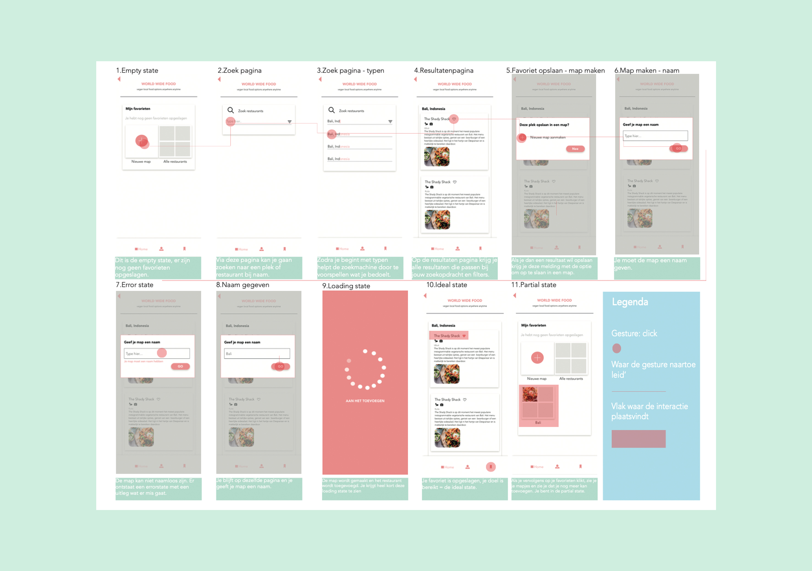

Design Patterns
In dit vak heb ik een interactie onderzocht en in detail uitgewerkt. Met behulp van het inzetten van de design patterns heb ik ontwerpbeslissingen kunnen maken.
Cijfer: 8
Behaalde leerdoelen
- Ontwerpkeuzes op rationele wijze kunnen overbregen aan opdrachtgevers of teamleden
- Ontwerpbeslissingen voor een multi-device ontwerp overbrengen in een wireflow
- Ontwerpbeslissingen onderbouwen d.w.v. de patterns
- Gedachtegang achter een interactie begrijpen (mental model)